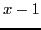

Next: Examples Up: Simple applications of the Previous: Examples Contents Index
Any root which occurs more than once in an equation is
called a multiple root. Thus  ,
,  ,
,  , are the roots of
, are the roots of
Let  denote an integral rational function of
denote an integral rational function of  having
a multiple root
having
a multiple root  , and suppose it occurs
, and suppose it occurs  times. Then we may write
times. Then we may write
In case  has a second multiple root
has a second multiple root  occurring times,
it is evident that the H.C.F. would also contain the factor
and so on for any number of different
multiple roots, each occurring once more in
occurring times,
it is evident that the H.C.F. would also contain the factor
and so on for any number of different
multiple roots, each occurring once more in  than in the H.C.F.
than in the H.C.F.
We may then state a rule for finding the multiple roots
of an equation  as follows:
as follows:
Solution. Place .
First step. .
Second step. H.C.F. = .
Third step. , therefore .
Since 1 occurs once as a root in the H.C.F., it will occur twice
in the given equation; that is, will occur there as
a factor. Dividing
by gives the
only remaining factor , yielding the root  . The roots
of our equation are then
. The roots
of our equation are then  ,
,  ,
,  . Drawing the graph of the function,
we see that at the double root the graph touches the
. Drawing the graph of the function,
we see that at the double root the graph touches the  -axis
but does not cross it.
-axis
but does not cross it.
Note: Since the first derivative vanishes
for every multiple root, it follows that the  -axis is tangent
to the graph at all points corresponding to multiple roots. If a
multiple root occurs an even number of times, the graph will not
cross the
-axis is tangent
to the graph at all points corresponding to multiple roots. If a
multiple root occurs an even number of times, the graph will not
cross the  -axis at such a point (see Figure 6.11);
if it occurs an odd number of times, the graph will cross.
-axis at such a point (see Figure 6.11);
if it occurs an odd number of times, the graph will cross.
david joyner 2008-08-11